Heroes
24 birds, three for each of eight roles. 12 are playable now; the rest arrive in later stages. A match uses twelve different birds: no bird appears twice.
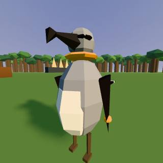
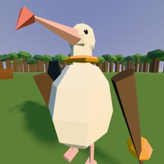
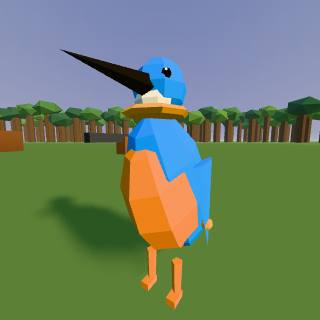
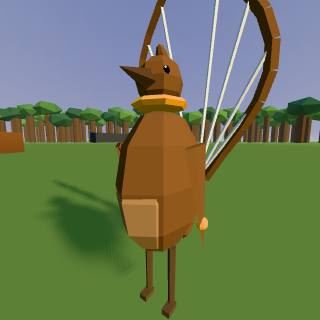
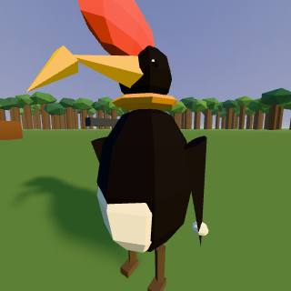
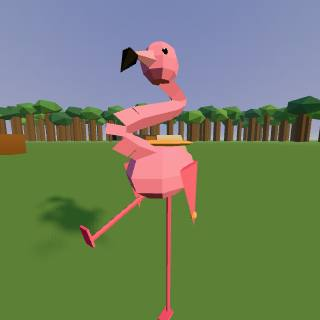
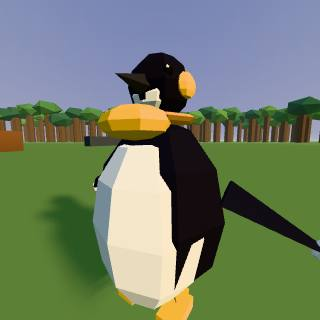
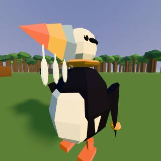
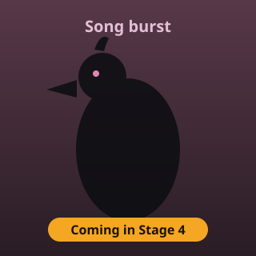


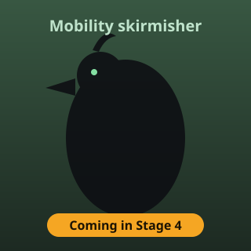
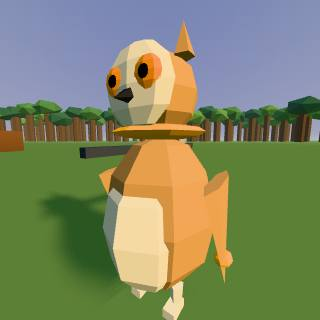
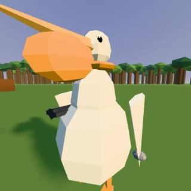

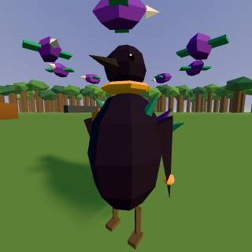


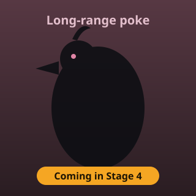
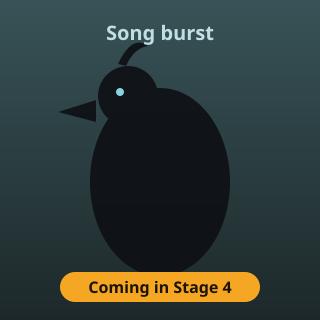

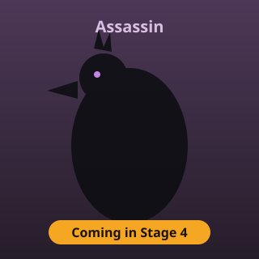
Roles
| Role | Birds | Playable |
|---|---|---|
| Gun carry | Hornbill, Pelican, Woodpecker | 2 / 3 |
| Song burst | Peacock, Starling, Cockatoo | 1 / 3 |
| Tank / initiator | Albatross, Penguin, Cassowary | 2 / 3 |
| Support | Lyrebird, Flamingo, Swan | 2 / 3 |
| Assassin | Kingfisher, Nightjar, Kiwi | 1 / 3 |
| Area control | Shrike, Puffin, Vulture | 2 / 3 |
| Long-range poke | Owl, Toucan, Frigatebird | 1 / 3 |
| Mobility skirmisher | Swift, Hummingbird, Secretarybird | 1 / 3 |
Every ability is listed on the Abilities page. Numbers for guns, health and speed come straight from the game's data files, so they change when the game is rebalanced.
Gun carry
Gun carries win fights with their weapon. They want a clear line of sight, steady aim at the head for beak shots, and the items that make the gun stronger (the Talon column). Stay behind your tanks and let the gun do the work.
Song burst
Song-burst birds deal their damage through abilities. Spend Seeds on the Song column, line up your abilities so they land together, and keep your cooldowns rolling rather than hoarding them.
Tank / initiator
Tanks start fights and soak damage. Take space for your flock, use your big health pool and resists to absorb tower fire, and use your control abilities on the enemies your allies are about to shoot.
Support
Supports keep allies alive and fights fair. Stay close to your carries, heal and shield early, and save your ultimate for the moment the fight turns.
Assassin
Assassins pick off one target at a time. Wait in cover, strike a bird that has strayed from its flock, and leave before the answer arrives. Mobility is your health bar.
Area control
Area-control birds change where the enemy can stand. Place traps and zones on the routes your enemies must take, and make them choose between walking into them and giving ground.
Long-range poke
Long-range birds win before the fight starts. Chip health from far away, take the high ground, and fall back when an enemy closes the distance.
Mobility skirmisher
Skirmishers live on movement. Dash in, trade a few shots or hits, and dash out. Use the lanes' Updrafts and rooftops to keep the initiative.